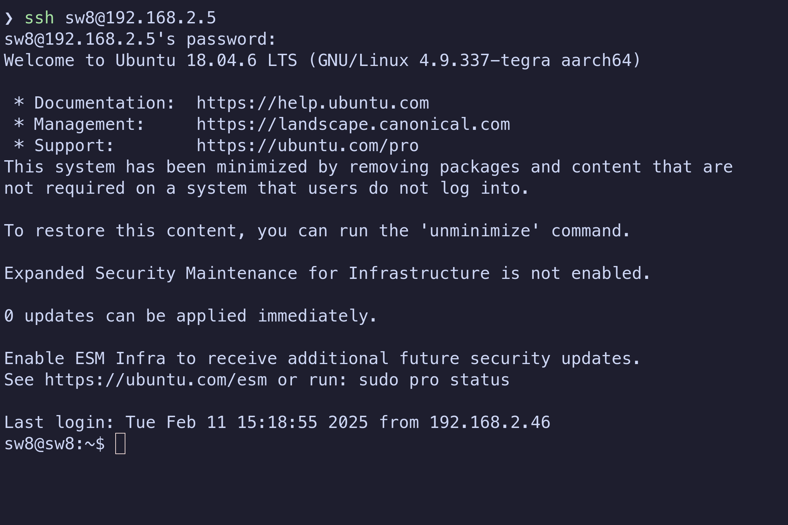
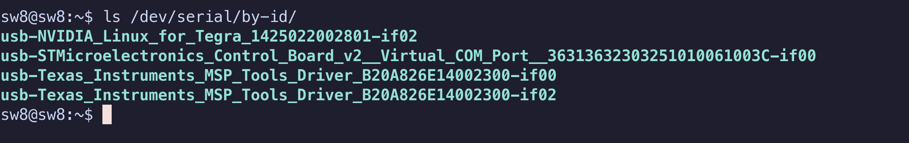
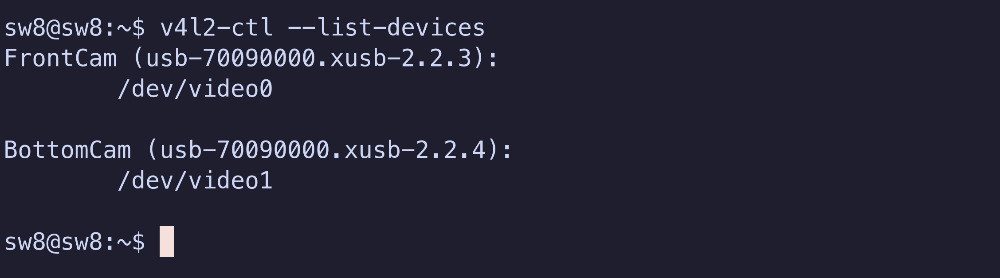

SeaWolf 8 Dryrun Procedures
Warning
Unless you know what you are doing, please use the team laptop instead of your personal device
It is known to work and most troubleshooting instructions assume that you are using it
Connect to the system
- Connect BOTH batteries to the robot (this is important! LBB is known to misbehave a little if the robot is powered on with only one battery present!)
- Power the robot on using the system switch
- Connect the tether to the end cap and the other end to your computer
- Wait up to 2 minutes for your computer to connect to the Jetson by ethernet. Once connected, continue. Otherwise, see Jetson Troubleshooting.
- SSH into the Jetson by running the following command in a terminal (works on windows too):
ssh sw8@192.168.2.5- If prompted about a "fingerprint" enter "yes"
- Enter the password when prompted (ask other members if you don't know the password)
- Once you've entered the password, you'll have a ssh session connected to the Jetson. You'll see a shell from the Jetson in your terminal now.
Example

Verify everything is connected to the Jetson
Important
Run the following commands on the Jetson over the ssh connection.
Info
The output will vary slightly because:
- These names include serial numbers
- The control board may be either Adafruit or STMicroElectronics
- Peripheral devices like acoustics may not be installed
First make sure all necessary devices are present:
ls /dev/serial/by-id/
You should see several devices. Make sure the following exist:
- 1 Control Board
- 2 Texas Instruments devices (MEB, it's actually just one device but shows up as two)
If acoustics is installed, make sure the following exist:
- 2 Digilent devices (Acoustics FPGA, it's actually just one device, but shows up as two).
Example output

As you can see:
- The second device is our control board (it contains "Control_Board" in its name)
- The third and fourth devices are our two Texas Instruments devices (they contain "Texas_Instruments" in ther names)
- The acoustics FPGA is not connected, so no device appears (but if it were, it would contain "Digilent" in its name)
Then, make sure cameras are connected:
v4l2-ctl --list-devices
Example Output

You should see two devices labeled FrontCam and BottomCam (two different sections as shown above!)
Test Arm & Kill
- Arm the robot using the hardware switch
- The thrusters should beep 5 times
- 3 short beeps in rising pitch
- 1 long beep at a lower pitch
- 1 long beep at a higher pitch
- Wait 3 seconds
- Disarm the robot
- Wait 3 seconds
- Rearm the robot
- The thrusters should beep again
If you do not hear all 5 beeps when arming, see troubleshooting details
If your SSH connection to the Jetson closes unexpectedly, see here
Motor Test
Info
This assumes AUVControlBoard interface scripts are located at ~/AUVControlBoard on the Jetson.
The correct version of the scripts should already be selected. If you need to change versions, do the following:
- Get the name of the version you want from this page
- Run the following commands, replacing
VERSIONwith the name of the version you want:cd ~/AUVControlBoard git checkout VERSION cd ~
First, run the following commands:
export CB_PORT=$(realpath /dev/serial/by-id/*Control_Board*)
echo $CB_PORT
This should print out something like /dev/ttyACM0, where the 0 is any number.
If it does not, the Jetson is not recognizing that a control board is connected. You should start by rebooting.
Next, run the following commands
cd ~/AUVControlBoard/iface
./launch.py -p $CB_PORT example/motor_test.py on the robot
The final command is a script that will prompt for dry run settings (speed and duration):
- When prompted for speed, press enter to use the default setting
- When prompted for duration, press enter to use the default setting
- Then, type each thruster number followed by enter and make sure that the thruster moves
- After testing all thrusters, type "q" and press enter to exit.
Info
If you get error 255 from the control board scripts, this indicates a timeout occurred. This is likely not a communication error with the control board. Just re-run the script and try again. It should work.
If any of the following occur, fix them!
- Wrong thruster numbers moving
- Thrusters not moving when their number is entered
- Thrusters moving "weakly" or "clicking" while moving (usually means power pole block is not seated properly)
LBB Test
- Disconnect one battery
- Repeat the motor test
- Plug the disconnected battery back in
- Disconnect the OTHER battery
- Repeat the motor test
The motor test should work off either battery on its own. If it is not, the LBB may not be working or one battery may not be working (check fuses, voltage on fischer, etc)
Setting MEB Port
Run the following to determine what communication port MEB is on:
export PORT=$(realpath /dev/serial/by-id/usb-Texas_Instruments_MSP_Tools_Driver_*-if02)
echo $PORT
/dev/ttyACM1, where the 1 can be any number. If it does not, see MEB Troubleshooting.
MEB Communication & Voltage Monitor
Info
This assumes the MEB software scripts folder is located at ~/SW8E-MEB-Software/scripts/ on the Jetson
Run the following command (the PORT variable we exported in Setting MEB Port is used):
cd ~/SW8E-MEB-Software/scripts/
python3 read_sys_voltage.py $PORT 57600
Info
The voltage monitor is currently not calibrated, so do not worry about ensuring that the correct battery voltage is being read.
You should still complete this step to test communications with MEB.
Make sure correct battery voltage is being read. Hold CTRL and press C (CTRL+C) to exit the program.
If the wrong voltage is read, the voltage monitor is not working.
If you get serial communication errors, MEB may not be communicating properly (or you may be using the wrong port).
MSB
Info
This assumes the MEB software scripts folder is located at ~/SW8E-MEB-Software/scripts/ on the Jetson
Important
You will need dropper makers loaded to observe correct behavior, but loading torpedoes is discouraged
Run:
cd ~/SW8E-MEB-Software/scripts/
PORT variable we exported in Setting MEB Port is used in the following commands. You should be able to just copy and pase these commands.
Run each of the following commands:
- Reset (Droppers should hold markers and torpedoes are in loaded position)
python3 msb_command.py $PORT 57600 reset - Drop marker 1
python3 msb_command.py $PORT 57600 d1_trig - Drop marker 2
python3 msb_command.py $PORT 57600 d2_trig - Fire torpedo 1
python3 msb_command.py $PORT 57600 t1_trig - Fire torpedo 2
python3 msb_command.py $PORT 57600 t2_trig - Reset (Droppers hold markers and torpedoes return to loaded position again)
python3 msb_command.py $PORT 57600 reset
Acoustics System
TODO
This will be written once there is a stable test interface for acoustics. For now, refer to the acoustics project people and have them test what they want.
Camera Stream Test
Info
This assumes the Cam test scripts folder is located at ~/SW8S-CamTest on the Jetson
Info
The RTSP server (mediamtx) is automatically started by a systemd user service.
Run the following to check the status of the service (press 'q' to exit):
systemctl --user status mediamtx.service
Run:
~/SW8S-CamTest/startstreams.sh
Important
This script will not exit on its own unless it fails. If it exits on its own, the cameras are probably not connected!
Next, you need to use VLC on your computer to view the streams and make sure they are working. Note that the streams will be "delayed" when viewing with VLC, but this is OK. To view with less latency, you can install mpv and use the playstreams.sh scripts in the SW8S-CamTest repo (if you don't know what this means, just test with VLC).
To view with VLC:
- Leave the ssh session open
- Launch VLC
- Media > Open Network Stream
- Enter
rtsp://192.168.2.5:8554/front.mp4 - Click "Play"
- Wait until you see the stream
- Media > Open Network Stream
- Enter
rtsp://192.168.2.5:8554/bottom.mp4 - Click "Play"
- Wait until you see the stream
- Close VLC
Disarm and Power Off Safely
- Disarm the robot using the hardware switch
- Run the following command:
sudo poweroff - Wait 30 seconds
- Turn the system off with the system switch